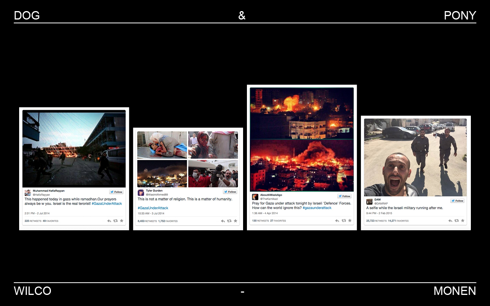
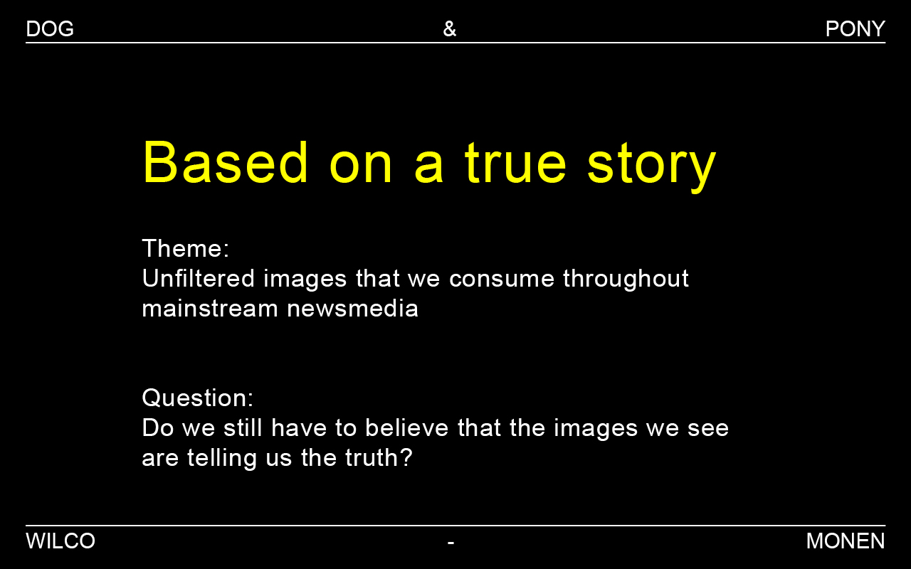
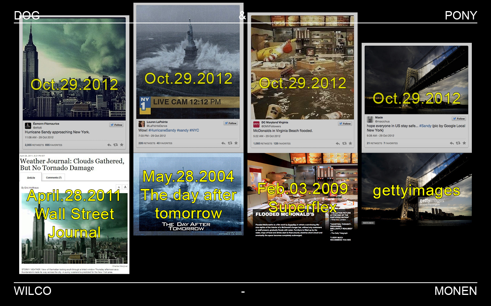
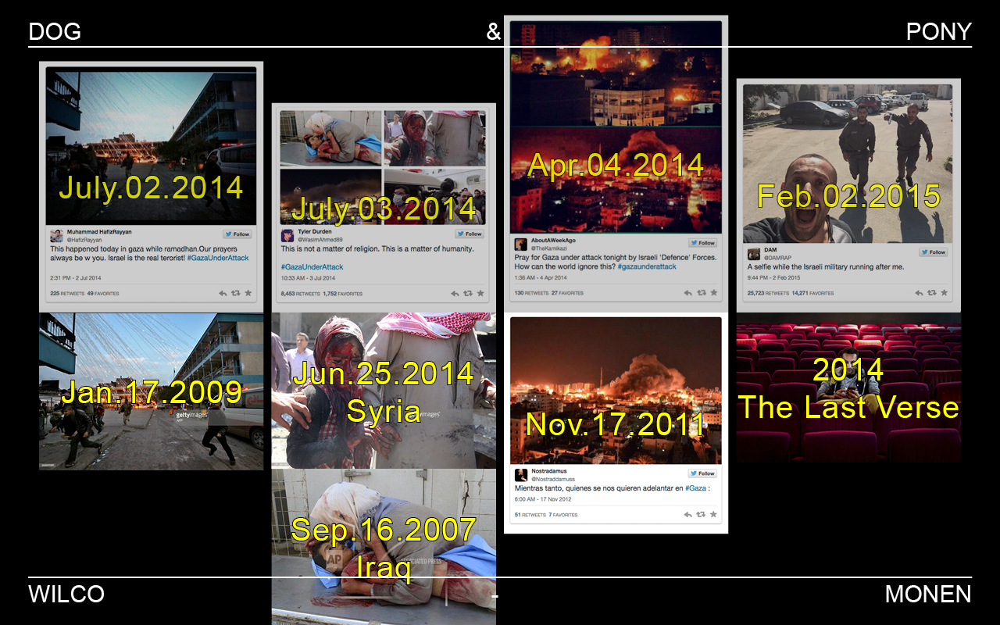
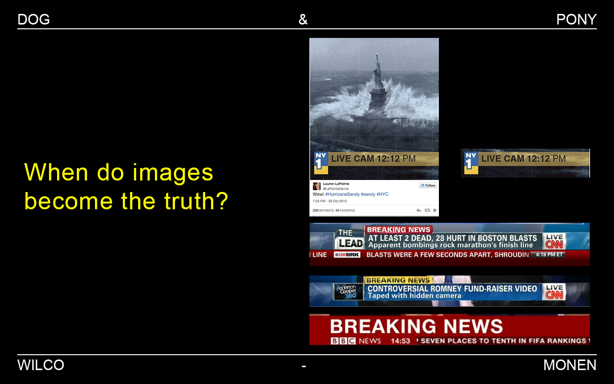
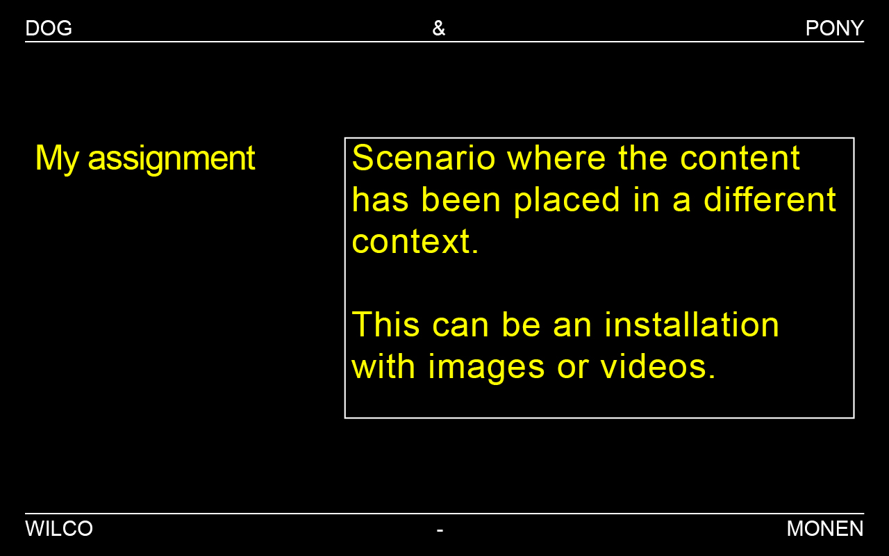

Unfiltered images that we consume throughout mainstream news-media.
Because of social media the news has become rapidly. Every second a little more than one hour of video is uploaded on youtube, 58 photos are shared on Instagram, more than 4000 photos posted on Facebook and over 6000 tweets placed on Twitter. It takes 30 seconds after an incident before someone posts an update on social media. All those posts and tweets are making it more difficult for journalists to check every incident on facts. Therefore we should ask our-self the question if we still have to believe that the images we see are telling us the truth?
What I want to achieve with this project is that the viewer is going to wonder whether what he/she sees or reads on the news is reality. I want to do this by combining fact and fiction, I hereby determine what the content is and in what way the content is placed in context. This can be images that really from the news or images that I have created. It is up to the viewer to decide if he/she wants to see more facts or more fiction.
People who check their phone, television and computer every ten minutes for news, people who believe the news-media is based on facts and journalists.
To establish this, I want to create a series of video installations where facts and fiction overlay each other.
Slide one: What you see here are photo’s that have been posted on twitter on the 29th of October in 2012. On this day hurricane Sandy crossed New York city. What you see are dark clouds, high waves, a flooded McDonalds and again dark clouds.
Slide two: The next 3 photo’s are posted in twitter with the hashtag #GazaUnderAttack. What you see are rocket impacts, children covered with blood, a burning city. And on the last photo you see a Palestinian guy chased by Israeli military.
Slide three: My project is called ‘Based on a true story’ My theme is: unfiltered images that we consume throughout mainstream news-media The question I want to raise with my project is: Do we still have to believe that the images we see are telling us the truth. (these can be still and moving images)
Slide four: So the important things of the earlier photos are the dates and the sources. What you see is that some photos are posted months or even years earlier. Some photos are stills from movies like ‘The Day After Tomorrow’ or film projects like McDonalds flood by Superflex. Or bought images from gettyimages.
Slide five: With the #GazaUnderAttack posts you see that the first photo is from 5 years earlier. In the second post they used photos from different dates and different countries. And the last photo is actually posted on a film set.
Slide six
Slide seven: Where I am working on now is to see when images become trustful. When do people believe what they see. And what I think is a good example is the ‘the day after tomorrow’ photo, where the creator placed a banner of New York 1 news channel on it. With this graphic the image becomes more real.
Slide eight
Slide nine: What I want to achieve with this project is a scenario where I create one or multiple docufictional/mocumentery videos. I want to create a scenario where the content has been placed in a different context.